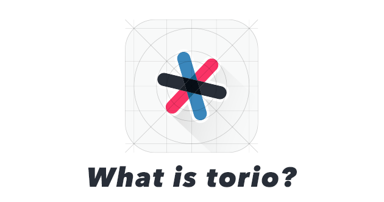

<html lang="ja">
<head>
<meta http-equiv="Content-Type" content="text/html; charset=utf-8">
<title>torio Newsletter</title>
<meta name="robots" content="noindex,nofollow">
<meta property="og:title" content="torio（トリオ）はチームで共創する新しいプロジェクト管理ツールです。">
<link href='http://fonts.googleapis.com/css?family=Lato:400,700' rel='stylesheet' type='text/css'>
<style type="text/css" media="screen">
a img{
border:none;
}
strong {
font-weight: bold;
}
</style>
</head>
<body style="padding-top:0;padding-bottom:0;padding-right:0;padding-left:0;background-color:#fff; color:#333333; font-size:12px; line-height:1.6; font-family:'Lato','ヒラギノ角ゴ Pro W3', 'Hiragino Kaku Gothic Pro', 'メイリオ', Meiryo, Osaka, 'ＭＳ Ｐゴシック', 'MS PGothic', sans-serif;">

<table width="100%" align="center" bgcolor="#f9f9f9" style="padding:20px 0 30px 0;">
<tr>
<td>

<p style="padding: 0 0 10px 0 ;text-align:center;"><a href="" target="_blank"></a></p>

<table class="content" width="630" border="0" cellpadding="0" cellspacing="0" style="font-size:13px; line-height:1.6;/*border: 1px solid #dcdcdc;*/" align="center" bgcolor="#FFFFFF">
<tbody>
<tr>
<td style="text-align: left;padding: 20px;clear: both;background: #282d37;">
<p style="float: left;margin: 0;padding: 0;line-height: 1.2;"></p>
<p style="float: right;margin: 0;padding: 0;line-height: 1.4;color: #abacae;font-style: italic;">2015 / 9 / 1</p>
</td>
</tr>
<tr>
<td style="border-bottom: 1px solid #eeeeee;"></td>
</tr>
<tr>
<td colspan="2" style="padding:40px 30px; text-align:left;">
<h1 style="line-height:1.8; font-size: 18px;color: #fa3366; margin-bottom:30px;">はじめまして！torio（トリオ）とよんでください。</h1>
<p style="line-height:1.8; font-size:14px; margin-bottom:10px;">ご登録いただいているユーザーのみなさまにニュースレターを配信させていただきます。</p>
<p style="line-height:1.8; font-size:14px; margin-bottom:10px;">今後は、機能アップデートのお知らせや便利な使い方、活用事例など、みなさまに価値ある情報を提供していきたいと思っています。</p>
<p style="line-height:1.8; font-size:14px; margin-bottom:10px;">今回は第１回目ということで<strong style="color: #fa3366;">サービスに込めた想い</strong>についてご紹介します。</p>
<p style="line-height:1.8; font-size:14px; margin-bottom:10px;">
torioは、情報がオープンに開示できていないことで起きる認識のズレ、思い込みといった<br>
社内の不整合から問題意識をもって誕生した<strong style="color: #fa3366;">チームで共創するためのプロジェクト管理ツール</strong>です。<br>
</p>
<p style="line-height:1.8; font-size:14px; margin-bottom:10px;">
わたしたちが実現したい想いを名前に、そしてシンボルに込めました。<br>
</p>
<p style="line-height:1.8; font-size:14px; margin-bottom:10px;">
torioは、自社・パートナー・ユーザーの３者をつなぎ、<br>
コラボレーションすることで、<br>
未来を作っていく姿を「＊」（アスタリスク・星）<br>
をシンボルとして用いることで表現しています。<br>
</p>
<p style="line-height:1.8; font-size:14px; margin-bottom:10px;">
わたしたちは、この３者をつなぐ新しいプロジェクト管理ツールを提供し、<br>
夜空に輝く無数の星のように<strong style="color: #fa3366;">多様な価値観</strong>を持った人たちが<br>
<strong style="color: #fa3366;">創造性豊か</strong>に力を発揮し、<strong style="color: #fa3366;">オープンで共創しあえる</strong><br>
そんな未来を実現していきたいと思っています。<br>
</p>
<p style="line-height:1.8; font-size:14px; margin-bottom:10px;">
働き方も多様化する中で、関わる人たちのライフスタイルや<br>
働く場所・時間が違うことをデメリットに感じることのないワークスタイルを<br>
知的に、かつ情報をオープンに共有し合い、パートナーに信頼と安心を届け、<br>
ユーザーに未来を提供するハッピートライアングルを<br>
torioを通して作っていきます。<br>
</p>
<p style="line-height:1.8; font-size:14px; margin-bottom:10px;">
<strong style="color: #fa3366;">関わる人がハッピーになる未来をつくる。</strong><br>
この目標を実現できるようにサービスを盛り上げていきたいと思っています。<br>
</p>
<p style="line-height:1.8; font-size:14px; margin-bottom:10px;">
生まれたばかりのサービスなので、使いにくい部分がたくさんあると思います。<br>
ここはみなさんの声を聞いて、サービスをより良いものにしていく力にしていきたいと思っていますので、<br>
気になるところがありましたら、お気軽にメッセージをいただけるとうれしいです！
</p>
<p style="line-height:1.8; font-size:14px; margin-bottom:10px;">
それではどうぞよろしくお願いします！
</p>
<p style="line-height:1.8; font-size:14px;">torioチーム一同</p>
</td>
</tr>
</tbody>
</table>

</td>
</tr>
</table>

<p style="font-size:11px; text-align:center; padding-top: 20px;"><a href="">Unsubscribe</a> from any communication about this invitation</p>
<p style="font-size:10px; text-align:center;">
Copyright &copy; Asnica, Inc All Rights Reserved.
</p>